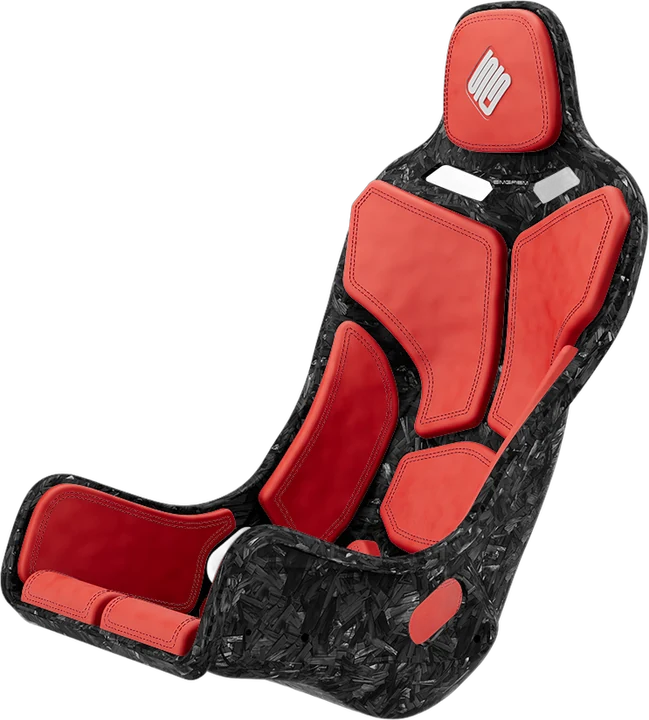
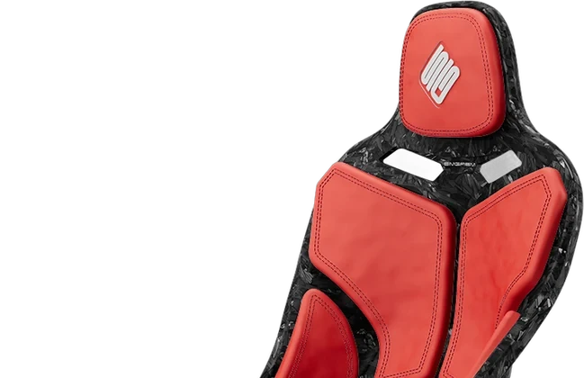
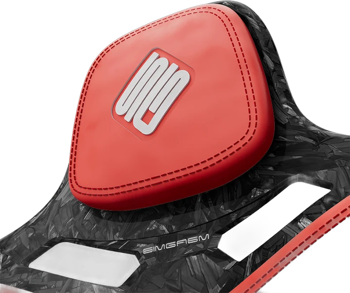

<!doctype html>
<html lang="en">
<head>
<meta charset="utf-8">
<meta name="viewport" content="width=device-width, initial-scale=1">
<title>Simgasm popup</title>
<!--
  OBS browser source for GreMi's Simgasm partnership.
  Plays a short loop (the logo icon, a few cockpits, the full logo with the discount code) every time
  Race Control (gremi_bot) posts the Simgasm message in Twitch chat. It reads chat
  anonymously, so it needs no login. Transparent background.

  URL options:  ?test        play now and every 25 seconds (to place it in OBS)
                ?every=30    also play on its own every 30 minutes
                ?channel=gremi_gaming&bot=gremi_bot&word=simgasm
  Suggested browser source size: 1920 x 1080 (it scales to any size).
-->
<link rel="preconnect" href="https://fonts.googleapis.com">
<link rel="preconnect" href="https://fonts.gstatic.com" crossorigin>
<link href="https://fonts.googleapis.com/css2?family=Montserrat:wght@600;800&display=swap" rel="stylesheet">
<style>
  :root { --yellow: #ffbf00; --ink: #0d0d10; }
  html, body { margin: 0; height: 100%; background: transparent; overflow: hidden; }
  #stage { position: fixed; inset: 0; display: grid; place-items: center; pointer-events: none; }
  .card {
    position: absolute; display: grid; justify-items: center; gap: 2vmin;
    opacity: 0; transform: scale(.2) rotate(-8deg);
  }
  .card img { display: block; max-width: 60vmin; max-height: 52vmin; filter: drop-shadow(0 2vmin 3vmin rgba(0,0,0,.55)); }
  .logo img.icon { width: 40vmin; max-width: 40vmin; max-height: 40vmin; height: auto; }
  .logo img.mark { width: 78vmin; max-width: 78vmin; height: auto; max-height: none; }
  .code {
    font-family: Montserrat, Arial, sans-serif; font-weight: 800; font-size: 4.6vmin;
    background: var(--yellow); color: var(--ink); padding: 1.2vmin 3vmin; border-radius: 1.6vmin;
    box-shadow: 0 1vmin 3vmin rgba(0,0,0,.5);
  }
  .code b { font-size: 6vmin; letter-spacing: .3vmin; }
  .url {
    font-family: Montserrat, Arial, sans-serif; font-weight: 600; font-size: 3.4vmin; color: #fff;
    text-shadow: 0 .4vmin 1.4vmin rgba(0,0,0,.8);
  }
  .in  { animation: pop-in .55s cubic-bezier(.2, 1.6, .4, 1) forwards; }
  .out { animation: pop-out .35s ease-in forwards; }
  .card.in img.float { animation: float 1.8s ease-in-out infinite alternate; }
  /* forged seat: one continuous camera move into the headrest. The close-up photo is warped onto
     the headrest of the full seat, the camera turns to the close-up's angle while it zooms, and the
     frame stays the size of the close-up, so it reads as zooming into one picture */
  .zoom {
    width: 68vmin; height: 62vmin; position: relative; filter: drop-shadow(0 2vmin 3vmin rgba(0,0,0,.55));
    -webkit-mask-image: linear-gradient(to right, transparent, #000 8%, #000 92%, transparent),
                        linear-gradient(to bottom, transparent, #000 8%, #000 92%, transparent);
    -webkit-mask-composite: source-in;
    mask-image: linear-gradient(to right, transparent, #000 8%, #000 92%, transparent),
                linear-gradient(to bottom, transparent, #000 8%, #000 92%, transparent);
    mask-composite: intersect;
  }
  .zoom .world { position: absolute; left: 50%; top: 50%; width: 0; height: 0; transform-origin: 0 0; }
  .card .zoom img { position: absolute; left: 0; top: 0; max-width: none; max-height: none; filter: none; transform-origin: 0 0; }
  .zoom .a { width: 649px; height: 720px; }
  .zoom .top { width: 649px; height: 420px; visibility: hidden; }
  .zoom .b { width: 720px; height: 602px; opacity: 0; }
  .zoom .shape {
    position: absolute; left: 0; top: 0; width: 720px; height: 602px; transform-origin: 0 0;
    -webkit-mask: url(forged-4.webp) 0 0 / 100% 100%; mask: url(forged-4.webp) 0 0 / 100% 100%;
  }
  .glow { background: radial-gradient(closest-side, rgba(255,255,255,.55), rgba(255,255,255,0)); border-radius: 50%; }
  .from-left.in  { animation-name: slide-in-left; }
  .from-right.in { animation-name: slide-in-right; }
  @keyframes slide-in-left  { from { opacity: 0; transform: translateX(-40vw) rotate(-10deg) scale(.7); } to { opacity: 1; transform: none; } }
  @keyframes slide-in-right { from { opacity: 0; transform: translateX(40vw) rotate(10deg) scale(.7); } to { opacity: 1; transform: none; } }
  @keyframes pop-in  { from { opacity: 0; transform: scale(.2) rotate(-8deg); } to { opacity: 1; transform: scale(1) rotate(0); } }
  @keyframes pop-out { from { opacity: 1; transform: scale(1); } to { opacity: 0; transform: scale(1.25) rotate(4deg); } }
  @keyframes float   { from { transform: translateY(-.8vmin); } to { transform: translateY(.8vmin); } }
  @media (prefers-reduced-motion: reduce) { .in, .out, .card.in img.float { animation-duration: .01s; } }
</style>
</head>
<body>
<div id="stage"></div>
<script>
(() => {
  const q = new URLSearchParams(location.search);
  const CHANNEL = (q.get("channel") || "gremi_gaming").toLowerCase();
  const BOT = (q.get("bot") || "gremi_bot").toLowerCase();
  const WORD = (q.get("word") || "simgasm").toLowerCase();
  // each with its own entrance, so the loop keeps moving
  const RIGS = [["rig-1", "from-right"], ["rig-2", "from-left"], ["rig-3", ""],
                ["rig-4", "from-right"], ["rig-5", "from-left glow"]];
  const stage = document.getElementById("stage");
  const wait = ms => new Promise(r => setTimeout(r, ms));
  let playing = false, lastPlay = 0;

  // preload, so nothing pops in half-loaded
  ["logo", "wordmark", "forged-1", "forged-1-top", "forged-4", ...RIGS.map(r => r[0])].forEach(n => { const i = new Image(); i.src = n + ".webp"; });

  function card(html, cls = "") {
    const el = document.createElement("div");
    el.className = "card " + cls;
    el.innerHTML = html;
    stage.appendChild(el);
    return el;
  }
  async function show(el, ms) {
    el.classList.add("in");
    await wait(ms);
    el.classList.replace("in", "out");
    await wait(380);
    el.remove();
  }

  // Where the close-up (forged-4, 720x602) lands on the full seat (forged-1, 649x720): a perspective
  // map in forged-1 pixels, fitted by matching the logo, stitching and headrest outline of both photos.
  const FIT = [[.402937, .467610, 373.2793], [.115241, .567209, -42.70876], [.0000889836, .000924537, 1]];
  const mul = (A, B) => A.map(r => [0, 1, 2].map(j => r[0] * B[0][j] + r[1] * B[1][j] + r[2] * B[2][j]));
  const inv3 = m => {
    const [[a, b, c], [d, e, f], [g, h, i]] = m, A = e * i - f * h, B = f * g - d * i, C = d * h - e * g;
    const det = a * A + b * B + c * C;
    return [[A, c * h - b * i, b * f - c * e], [B, a * i - c * g, c * d - a * f], [C, b * g - a * h, a * e - b * d]].map(r => r.map(v => v / det));
  };
  const at = (m, x, y) => { const w = m[2][0] * x + m[2][1] * y + m[2][2]; return [(m[0][0] * x + m[0][1] * y + m[0][2]) / w, (m[1][0] * x + m[1][1] * y + m[1][2]) / w, w]; };
  const css = m => `matrix3d(${m[0][0]},${m[1][0]},0,${m[2][0]},${m[0][1]},${m[1][1]},0,${m[2][1]},0,0,1,0,${m[0][2]},${m[1][2]},0,${m[2][2]})`;
  function zoomShot(el) {
    const world = el.querySelector(".world"), a = el.querySelector(".a"), top = el.querySelector(".top"), b = el.querySelector(".b");
    const shape = el.querySelector(".shape"), inner = shape.querySelector("img");
    const G = inv3(FIT);                                          // seat pixels -> close-up pixels
    b.style.transform = shape.style.transform = css(FIT);
    inner.style.transform = css(G);
    // G2 = G scaled down around the headrest so it leaves the headrest where it is: blending from "no
    // change" to G2 turns the seat to the close-up's angle without moving the headrest
    const [c1x, c1y] = at(FIT, 360, 301);
    const [gx, gy, gw] = at(G, c1x, c1y), d = .01;
    const jx = at(G, c1x + d, c1y), jy = at(G, c1x, c1y + d);
    const kG = Math.sqrt(Math.abs((jx[0] - gx) * (jy[1] - gy) - (jx[1] - gy) * (jy[0] - gx))) / d;
    let G2 = mul([[1 / kG, 0, c1x - 360 / kG], [0, 1 / kG, c1y - 301 / kG], [0, 0, 1]], G);
    const wc = G2[2][0] * c1x + G2[2][1] * c1y + G2[2][2];
    G2 = G2.map(r => r.map(v => v / wc));
    // camera: starts on the whole seat (52vmin tall), ends on the close-up upright and 60vmin wide
    const c0 = { x: 649 / 2, y: 720 / 2 }, K = 60 / 52 * kG;
    const P = { x: (K * c1x - c0.x) / (K - 1), y: (K * c1y - c0.y) / (K - 1) };
    const HOLD = 700, MOVE = 1250, BACK = 5;                   // BACK: the background seat's blur (vmin/10)
    // a small pull back, then a hard acceleration in that overshoots a touch and settles: the "pop"
    const ease = t => {
      if (t < .14) return -.035 * Math.sin(Math.PI * t / .14);
      const x = (t - .14) / .86, g = x * x * (1.6 - .6 * x), c = 1.2;
      return 1 + (c + 1) * Math.pow(g - 1, 3) + c * Math.pow(g - 1, 2);
    };
    const ramp = (t, from, to) => { const x = Math.min(1, Math.max(0, (t - from) / (to - from))); return x * x * (3 - 2 * x); };
    const t0 = performance.now();
    let raf;
    const frame = now => {
      const ms = now - t0 - HOLD, t = Math.min(1, Math.max(0, ms / MOVE)), e = ease(t);
      const speed = Math.abs(ease(Math.min(1, t + .01)) - e) / .025;   // about 1 at the fastest point
      const s = Math.pow(K, e), u = .52 * Math.min(innerWidth, innerHeight) / 720;
      const W = G2.map((r, i) => r.map((v, j) => (i === j ? 1 - e : 0) + v * e));
      const cx = P.x - (P.x - c0.x) / s, cy = P.y - (P.y - c0.y) / s;
      world.style.transform = css(mul([[u * s, 0, -u * s * cx], [0, u * s, -u * s * cy], [0, 0, 1]], W));
      // the bottom of the seat (long off screen by then) is cropped away halfway, because the
      // perspective turn can't draw it near the end
      a.style.visibility = e < .5 ? "visible" : "hidden";
      top.style.visibility = e < .5 ? "hidden" : "visible";
      // the full seat stays behind the close-up, softly out of focus, like a camera's depth of field
      const dof = `blur(${ramp(e, .4, 1) * BACK * Math.min(innerWidth, innerHeight) / 1000 / s / u}px)`;
      a.style.filter = top.style.filter = dof;
      b.style.opacity = ramp(e, .45, .9);
      world.style.filter = speed > .4 ? `blur(${(speed - .4) * 4 / s / u}px)` : "";
      raf = requestAnimationFrame(frame);
    };
    raf = requestAnimationFrame(frame);
    return () => cancelAnimationFrame(raf);
  }

  async function play() {
    if (playing || Date.now() - lastPlay < 60000 && !q.has("test")) return;
    playing = true; lastPlay = Date.now();
    await show(card('', "logo"), 1800);
    const z = card('<div class="zoom"><div class="world">' +
                   '<div class="shape"></div></div></div>');
    const stop = zoomShot(z);
    z.classList.add("in");
    await wait(3900);
    z.classList.replace("in", "out");
    await wait(380);
    stop();
    z.remove();
    for (const [r, cls] of RIGS) await show(card(``, cls), 1500);
    await show(card('<div class="code">10% OFF with code <b>GREMI10</b></div>' +
                    '<div class="url">simgasm.com/gremi_gaming</div>', "logo"), 4000);
    playing = false;
  }

  // Twitch chat, read-only and anonymous
  function listen() {
    const ws = new WebSocket("wss://irc-ws.chat.twitch.tv:443");
    ws.onopen = () => {
      ws.send("PASS SCHMOOZE");
      ws.send("NICK justinfan" + Math.floor(10000 + Math.random() * 80000));
      ws.send("JOIN #" + CHANNEL);
    };
    ws.onmessage = e => {
      for (const line of e.data.split("\r\n")) {
        if (line.startsWith("PING")) { ws.send("PONG :tmi.twitch.tv"); continue; }
        const m = line.match(/^:([^!]+)![^ ]+ PRIVMSG #[^ ]+ :(.*)$/);
        if (m && m[1].toLowerCase() === BOT && m[2].toLowerCase().includes(WORD)) play();
      }
    };
    ws.onclose = () => setTimeout(listen, 5000);
  }
  listen();

  if (q.has("test")) { play(); setInterval(play, 25000); }
  const every = parseFloat(q.get("every"));
  if (every > 0) setInterval(play, every * 60000);
})();
</script>
</body>
</html>
